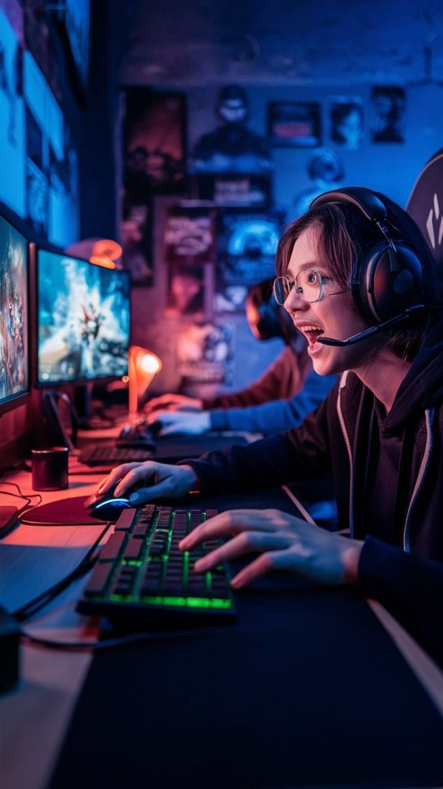
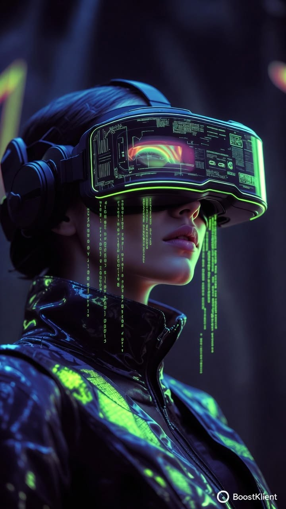

Mon Univers
01
Musique & Rythmes
Plus qu'une simple écoute, la musique est le moteur de ma productivité. De l'Afrobeat pour l'énergie au Lo-fi pour la concentration, elle rythme mes sessions de code.
Afrobeat
Vibration
productivité

02
Gaming & Stratégie
Le jeu vidéo est pour moi un terrain d'exercice pour la logique. Qu'il s'agisse de tactique sur FIFA ou de gestion, j'aime l'aspect compétitif et analytique.
E-Sport
Focus
Stretegie

03
Cinéma & Science-Fiction
Passionné par les récits futuristes et les documentaires technologiques. C'est là que je puise mon inspiration pour imaginer le web de demain.
SciFi
Inspiration
#Futur